조회모음 SP
SCTQry_ylwa06002_0307 (구매요청현황)
- 변수
- 조회모음은 모든 변수가 정해져있다
1-1. @iWorkType
A,U,D를 사용하는 워크타입이 아님
조회할 때 조회별로 방식이 다를 수 있기 때문에 사용한다
ex. 사원별로 조회 / 부서별로 조회 등등
@iMajorCd : Major => Minor
@iCode : Minor => Print
3개의 SP동시 사용 => 분기해야한다
1-2. @iBizUnit (보통 1개로 구성)
ex. 사업장
1-3. @iDate1~4
최대 4개 => 굉장히 제한적이다
==> 이미 2개 사용
1-4. @i1stCond
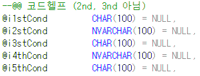
마찬가지로 5개까지만 사용 가능
2nd, 3nd가 아니라 2st, 3st로 되어 있다
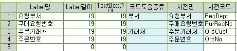
==> * 조회모음등록 (마스타 및 운영관리) - 운영관리 - 조회모음 - 조회모음등록
코드헬프 설정 및 위치 지정
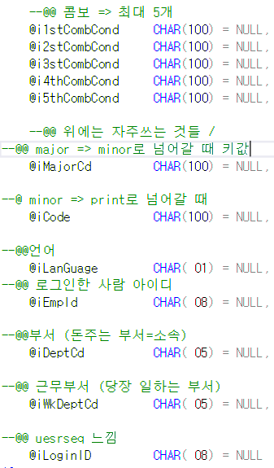
--@@ 안 쓰는 부분들은 주석처리 (나중에 수정 시, 다른 사람이 쓸 때 편하도록)
-- EXEC SDABOMControlQty @iBOMQty OUTPUT
-- EXEC SDAItemControlQty @iItemQty OUTPUT , /* 자재 수량 */
-- @iItemWonAmt OUTPUT , /*자재 원화 */
-- @iItemForAmt OUTPUT /*자재 외화 */
EXEC SDAGoodsControlQty @iGoodsQty OUTPUT , /* 수량 */
@iWonAmt OUTPUT , /*제품 원화 */
@iForAmt OUTPUT /*제품 외화 */
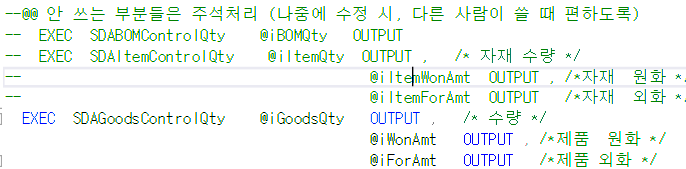
--@@ 화면에서 값을 줄 때 이상하게 올 수도 있음
--@@ => 이 문제를 해결하는 부분 => 공백없애기
SELECT @iMajorCd =ISNULL(LTRIM(RTRIM(@iMajorCd)),''),
@iCode =ISNULL(LTRIM(RTRIM(@iCode)),''),
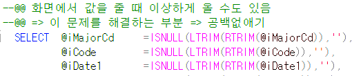
--@@ 누르면 각각 해당하는 PROC 로 간다
--@@ 하나의 PROC마다 다 작성이 되어있음
--@@ 마지막 RETURN => 다른건 안쓴다
IF @iWorkType = 'TITLE' GOTO Title_Proc --@@ 무조건있음
ELSE IF @iWorkType = 'MAJOR' GOTO Major_Proc --@@ 조회
ELSE IF @iWorkType = 'MINOR' GOTO Minor_Proc
ELSE IF @iWorkType = 'DETAIL' GOTO Detail_Proc --@@ 만약 시트가 3개일경우 => MINOR => MAJOR
ELSE IF @iWorkType = 'PRINT' GOTO Print_Proc
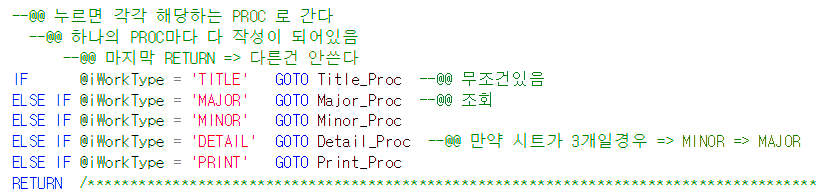
기본적인 틀
- 변수 선언 (거의 고정)
+. 색깔 선언
-
선언한 것들 공백 제거
-
iWorkType if문
- 해당하는 PROC로 이동
- Title_Proc
-
임시테이블 작성 (#Tmp_Qry)
-
컬럼 작성 (INSERT)
-
JUMP시 필요한 값들도 여기 작성
- Major_Proc
- 날짜, 점프관련, 조회결과
-
Minor_Proc
-
Detail_Proc
-
Print_Proc
- 프린트는 순서에 따라 저장하는게 아니라
다른 프로그램을 쓰기 때문에
무조건 alias를 붙여야한다
Title_Proc:
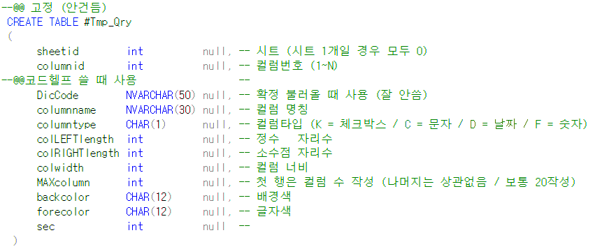
--@@ 고정 (안건듬)
CREATE TABLE #Tmp_Qry
(
sheetid int null, -- 시트 (시트 1개일 경우 모두 0)
columnid int null, -- 컬럼번호 (1~N)
--@@코드헬프 쓸 때 사용 --
DicCode NVARCHAR(50) null, -- 확정 불러올 때 사용 (잘 안씀)
columnname NVARCHAR(30) null, -- 컬럼 명칭
columntype CHAR(1) null, -- 컬럼타입 (K = 체크박스 / C = 문자 / D = 날짜 / F = 숫자)
colLEFTlength int null, -- 정수 자리수
colRIGHTlength int null, -- 소수점 자리수
colwidth int null, -- 컬럼 너비
MAXcolumn int null, -- 첫 행은 컬럼 수 작성 (나머지는 상관없음 / 보통 20작성)
backcolor CHAR(12) null, -- 배경색
forecolor CHAR(12) null, -- 글자색
sec int null --
)
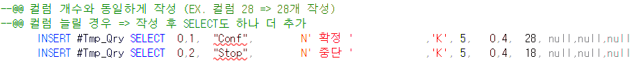
.
.
.
==> 총 28개
INSERT #Tmp_Qry SELECT 0,1, "Conf", N' 확정 ' ,'K', 5, 0,4, 28, null,null,null
INSERT #Tmp_Qry SELECT 0,2, "Stop", N' 중단 ' ,'K', 5, 0,4, 18, null,null,null
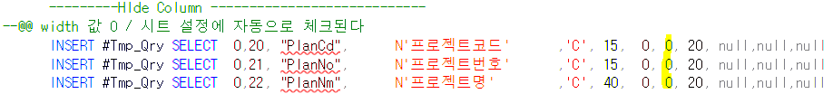
---------HIde Column ----------------------------
--@@ width 값 0 / 시트 설정에 자동으로 체크된다
Major_Proc
--@@ 점프화면 등록
--@@ 마스터 및 운영관리 - 운영관리 - 프로그램 - Jump항목 등록
--@@ 구매요청현황 => 구매요청으로 점프
--@@ 이 세팅을 안해주면 개발한 입력하면으로 점프하는게 아니라 표준 입력화면으로 점프한다
SELECT @wJumpPgm = MAX(JumpPgmID) --@@ JumpPgmID => 'frmUGPOReq%' 중 가장 긴 것 가져옴
FROM TCTJumpList
WHERE PgmId = 'ylwa06002' AND JumpPgmID LIKE 'frmUGPOReq%'
--@@ 조회모음 점프할Pgm
--@@ 없으면 표준으로 이동
IF ISNULL(@wJumpPgm,'') = '' SELECT @wJumpPgm = 'frmUGPOReq'
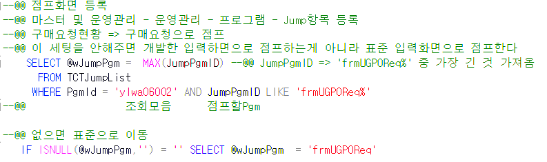
조회 결과 => 컬럼 전체 갯수 + total(배경색, 글자색)
ex. 컬럼 28개일 경우 => 총 30개 나와야한다
조회 결과1
--@@ C,D,S => 확정 중단 선택
--@@ 조회모음이지만 확정, 중단, 선택이 필요할 수 있다 => 처리 (완료,중단)을 위해 작성
--@@ Total 부분에 T를 넣을 경우 해당 컬럼에 대한 합계가 나온다)
SELECT 'C','D','S','','',
'' ,'' ,'' ,'','',
--10
'' ,'' ,'' ,'','',
'' ,'' ,'' ,'','',
--20
'' ,'' ,'' ,'','',
--25
'' ,@빨강1,@하양,
--@@ ==> 28개
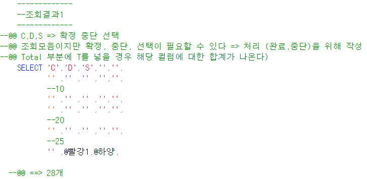
Print_Proc
--@@ 데이터셋 하나만 받아서 쓰기 때문에 조회결과1이 필요가 없다 / 색깔, 점프할 때 쓰는 부분도 필요 없다 (_/있는 부분)
--@@ 이렇게 두 개 지우고 majorproc 써도된다
--@@ 프린트는 순서가 아니라 다른 프로그램을 쓰기 때문에 무조건 alias 붙여야한다
aspx 필기